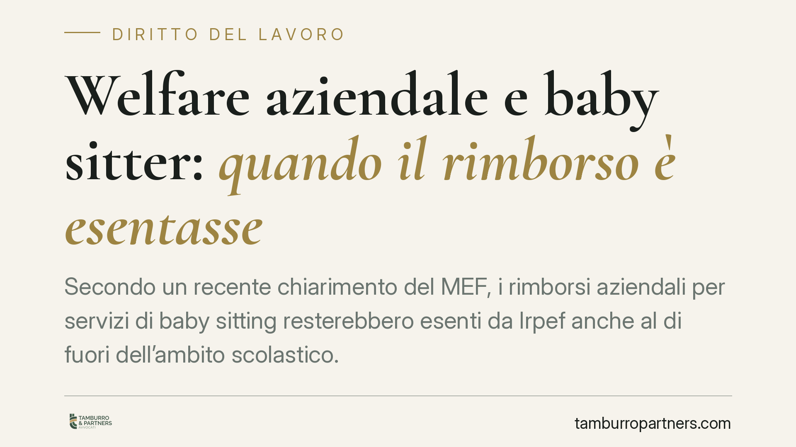

Welfare aziendale e baby sitter: quando il rimborso è esentasse
Secondo un recente chiarimento del MEF, i rimborsi aziendali per servizi di baby sitting resterebbero esenti da Irpef anche al di fuori dell'ambito scolastico. L'indicazione riapre spazi per i piani di welfare, ma va letta con attenzione: nasce da una risposta a interrogazione parlamentare, non da una circolare. Ecco il quadro normativo e le cautele operative per i datori di lavoro.

Il fatto
In risposta a un'interrogazione parlamentare a prima firma della senatrice Ester Mieli, la sottosegretaria all'Economia Sandra Savino ha confermato che i rimborsi erogati dal datore di lavoro per servizi di assistenza all'infanzia — comprese le prestazioni di baby sitting privata non collegate alla frequenza scolastica — possono beneficiare del regime di esenzione previsto per il welfare aziendale.
L'indicazione riprende l'orientamento già espresso dall'Agenzia delle Entrate con la Circolare n. 28/E del 15 giugno 2016, che aveva chiarito l'ambito applicativo delle agevolazioni sui servizi di educazione e assistenza ai familiari.
Una precisazione preliminare, però, è doverosa: la risposta a un'interrogazione parlamentare esprime un orientamento interpretativo del Ministero, non una fonte di prassi vincolante come la circolare o la risoluzione. Fornisce un indirizzo utile, ma non equivale a una certezza giuridica consolidata. Chi struttura un piano di welfare deve tenerne conto.
Inquadramento normativo
La cornice di riferimento è l'art. 51 del TUIR (d.P.R. 917/1986), che al comma 1 fissa il principio generale: tutto ciò che il lavoratore percepisce in relazione al rapporto di lavoro concorre a formare il reddito imponibile, salvo le eccezioni tassativamente previste.
Le deroghe rilevanti per il welfare sono contenute nel comma 2. In particolare:
- la lett. f-bis) esclude dal reddito le somme, i servizi e le prestazioni erogati alla generalità dei dipendenti (o a categorie di dipendenti) per la fruizione, da parte dei familiari, di servizi di educazione e istruzione anche in età prescolare, compresi i servizi integrativi e di mensa connessi, nonché per la frequenza di ludoteche, centri estivi e invernali e per borse di studio;
- la lett. f-ter) riguarda invece i servizi di assistenza ai familiari anziani o non autosufficienti.
Il baby sitting rientra nell'alveo della lett. f-bis), nella misura in cui si configura come servizio di assistenza all'infanzia riconducibile alla sfera educativa. La portata del chiarimento sta proprio qui: l'esenzione non è limitata ai servizi erogati in contesto scolastico, ma copre anche l'assistenza privata, purché inserita in un piano di welfare strutturato.
È importante distinguere questa categoria dal fringe benefit disciplinato dal comma 3 dell'art. 51, soggetto invece a una soglia annuale di non concorrenza al reddito (variabile per legge di bilancio). Le prestazioni di cui alle lett. f-bis) e f-ter), se rispettano i requisiti, sono esenti senza limite di importo: ragione per cui l'esatta qualificazione dell'erogazione è decisiva.
Implicazioni pratiche
Per il datore di lavoro il vantaggio è concreto. Un rimborso di 2.000 euro annui erogato come welfare ex art. 51 c. 2 lett. f-bis) arriva integralmente al dipendente, al netto di imposte e contributi. Lo stesso importo riconosciuto come aumento di retribuzione ordinaria sarebbe tassato secondo l'aliquota marginale del lavoratore e soggetto a contribuzione: il beneficio netto si ridurrebbe anche di oltre un terzo.
Il requisito centrale è quello della generalità dei dipendenti o di categorie omogenee. L'agevolazione non spetta se il benefit è riconosciuto *ad personam*: deve essere rivolto a tutti i dipendenti o a gruppi individuati secondo criteri oggettivi (ad esempio tutti i genitori con figli entro una certa età). Un'erogazione selettiva verso singoli dipendenti ne compromette l'esenzione.
Altrettanto rilevante è la tracciabilità. L'esenzione presuppone che la somma sia effettivamente destinata al servizio dichiarato. In assenza di documentazione idonea, l'importo rischia la riqualificazione come retribuzione imponibile, con recupero di imposte e contributi a carico dell'azienda.
Cosa fare in concreto
- Verificate il regolamento di welfare aziendale: deve prevedere espressamente i servizi di assistenza all'infanzia tra le prestazioni ammesse, con richiamo alle lettere f-bis) e f-ter) dell'art. 51 TUIR.
- Assicurate il requisito della generalità: definite categorie omogenee di beneficiari con criteri oggettivi e documentabili, evitando attribuzioni individuali.
- Conservate i giustificativi: pretendete fatture, ricevute o documentazione del prestatore del servizio, a prova dell'effettiva destinazione del rimborso.
- Aggiornate le procedure interne di erogazione e rendicontazione, distinguendo le prestazioni esenti dai fringe benefit soggetti a soglia.
- Valutate un interpello preventivo all'Agenzia delle Entrate per i casi dubbi: trattandosi di orientamento non vincolante, è la via per acquisire una risposta opponibile.
Una cautela finale
Il chiarimento ministeriale è un segnale favorevole, ma la solidità del regime di esenzione dipende dalla corretta costruzione del piano e dalla documentazione a supporto. Consigliamo di non assumere l'esenzione come automatica e di formalizzare ogni passaggio, così da reggere a un eventuale controllo.
Contributo informativo a cura di Tamburro & Partners Avvocati - Avv. Giuseppe Tamburro. Non costituisce parere legale.
Ogni storia di lavoro ha i suoi tempi.
Se gestisci HR e vuoi un confronto su contenzioso, ispezioni o licenziamenti, scrivi allo studio. Ti rispondiamo entro un giorno lavorativo.